Build reports and dashboards using the Insights reporting tool
Ellucian Insights offers you many ways to navigate and view your institution's data. Refer to this overview topic as a starting point for viewing your Insights data and creating new reports, dashboards, and collections.
Insights home page
To access your institution's reporting content and data sources, click Launch Reports on the Insights card on your Ellucian Experience dashboard. Or click the Insights home button from any page in Insights.
Alternatively, you can access the Insights reporting tool from anywhere in Experience using the Application menu  . Selecting Insights in the Application menu takes you to the Insights home page.
. Selecting Insights in the Application menu takes you to the Insights home page.
The navigation bar displays on the left of the Insights home page and contains the collections, dashboards, and reports that you have access to.
Reports, dashboards, and collections
- A report is the result set of a query of your data. A report can be anything from a simple tabular view of a table in your data source, a visualized image of the query result, or a complex and finely tuned SQL query.
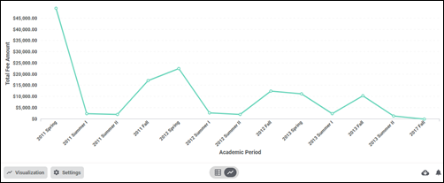
- A dashboard is a group of reports presented on a single page. Dashboards may contain filters to allow you to narrow down the data within the reports on the dashboard, as shown in the following example.
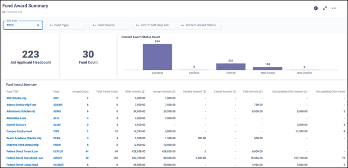
- A collection contains associated dashboards and reports. Think of collections as the directories or folders that contain dashboards and reports. Collections are depicted by folders in the navigation bar.
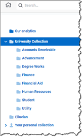
Explore saved reports and dashboards
In Ellucian Insights, every dashboard section or component is an individual report. Click the title of a report on a dashboard to see the detailed view of that report.
When viewing a report's detail view, you can explore the report the same way you explore a dashboard. You can also click the headings of the tables to see more options, such as adding the values of a column, filtering based on that column, or displaying a distribution.
For example, in a table with a list of students, if you click the Age column and select Distribution, you will see a bar chart with the count of students in each age bracket.
Search for data sources, dashboards, reports, and more
Use the search bar to find dashboards, reports, collections, or any item found in Insights. You can select a previously viewed item, select from the typeahead results, or press Enter to view the search results page.
Searches take into account items’ titles, descriptions, and even the contents of your SQL queries. For example, you can search for statements like SELECT count(distinct "source"."Registered Count") to find that report you worked on two months ago.
Search results display an item’s description, the collection it is saved to, and the type of object it is.
Browse your data sources
Your institution's data is the foundation of any Insights report. To explore your database tables, reporting views, and schemas directly through Insights, expand Browse in the navigation sidebar.
For more information on browsing the database schemas and tables through Insights, see Browse your data.
Query and visualize your data
- Reports: You can use the query builder to compose simple or sophisticated queries. The query builder guides you through building custom expressions without needing to know SQL.
- SQL queries: For advanced users with SQL experience, you can use the editor to compose more complex SQL queries.
For more information on how to query and visualize your data, see Create reports.
Download results
You can download results from a saved report, SQL query, or from an individual dashboard component.
Results can be downloaded:
- From a report or SQL query: click Download results at the bottom of the page to reveal download options.
See Download a report or dashboard for more information.
- From a dashboard component: click More to reveal download options.
You can choose to download the results to CSV, XLSX, JSON, or PNG format.
Create reports
In Ellucian Insights, a report is simply the result of a data query. However, you can create a more meaningful visualization for the report containing the query results.
Insights provides two tools for building reports: the query builder and the SQL editor.
Create reports with the query builder
Most report designers will use the simple yet powerful query builder to create reports. You can build a simplistic tabular report based on filtering and summarizing data, or you can build more complex reports, join tables, create custom columns, add drillthrough capabilities, and more.
The benefit of using the query builder is that you do not have to know SQL to create queries and reports. You can duplicate an existing report and use it as a starting point for another query. Reports can also start with a table in a database, or with the results of a saved query. You can convert these queries to SQL at any time.
Create reports using SQL queries
For more advanced report designers, you can write your own SQL query to build complicated and advanced reports. Or, as with reports built with the query builder, you can duplicate an existing report and then use the SQL editor to add your advanced query code. You can also migrate reports previously written in SQL to Insights.
For reports written in SQL, you can use variables in your code to create SQL templates, including field filter variables that can create smart drop-down filters.
Use the query builder to build reports
Most reports that you build in Insights have the same building blocks. The query builder is an intuitive, user-friendly tool to help you assemble those blocks and meet most of your reporting needs.
How to start a new report
- From any page in Insights, click .
This method builds a new report from scratch without using an existing report as the foundation.
Note: This is the method highlighted throughout this topic. - Modify an existing report and save it as a new report.
This method builds a new report using an existing report as the foundation. See Build a new report from an existing report for instructions using this method.
Select your data source
When you build a new report from scratch, you can choose from using models, raw data, or a saved report as your data source. For example, if you choose Raw Data, you might choose .
After selecting your data source, the query builder displays.
The query builder is a user-friendly interface for building your reports without needing to know SQL. It consists of a sequence of individual steps to help you build your report, such as selecting your data source, adding filters, and picking metrics or columns to summarize by.
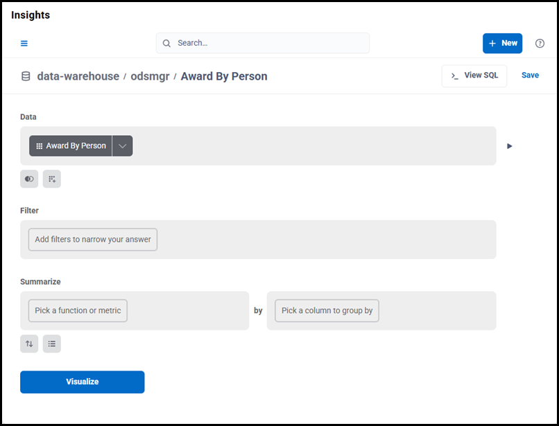
Each section (or step) of the query builder includes additional tools pertaining to that step. As you build your report, you can use the preview button to view the first few rows of the results of your query up to that step.
Filters
Report filters narrow the data set based on specific criteria. If adding filters to your report, you can select one or more columns to filter on. Depending on the type of column you pick, the query builder may display intuitive filter options for the column, such as a calendar for date columns.
See Report filters for more information about adding filters.
Summaries
Adding a summarize step allows you to choose how to aggregate the data from the previous step of the query builder. You can select one or more metrics, and optionally group those metrics by one or more columns.
See Report summaries for more information about adding summaries to your report.
Sort results
Click the Sort button to select one or more columns in your table to use to sort the report results. For each selected column, you can also choose whether to sort ascending or descending. Simply click the arrow to change from ascending (up arrow) to descending (down arrow).
Set a row limit
Use the Row limit option to restrict the number of rows you want to display. For example, use this in conjunction with sorting to create a top 10 list, by first sorting by one of the columns in your result, then adding a row limit of 10.
Unlike other steps, the row limit step can only be added at the end of your report.
Custom columns
Custom columns are helpful when you need to create a new column based on a calculation, such as subtracting the value of one column from another or extracting a portion of an existing text column.
You can use math operators in your formulas, such as +, –, * (multiplication), and / (division), in addition to many spreadsheet-like functions. You can also use parentheses to clarify the order of operations.
View the SQL that powers your report
Beneath the surface, all Insights reports are written in SQL. If you are curious to see the SQL syntax for a report, click View SQL to display the SQL.
Copy SQL from a report
View or copy SQL from a report within Ellucian Insights.
Before you begin
- The report must originate from query builder. See Use the query builder to build reports for more information.
- You must have Access permission to view the SQL of a report.
Procedure
-
Click
 Editor.
Editor.
Build a new report from an existing report
Building a new report does not have to always start from scratch. You can use an existing report as the starting point for a new one.
Before you begin
- You must have Edit permission to access the collection containing the report you want to duplicate.
- You will need a unique name for your new report to prevent unwanted results.
- You cannot duplicate reports in the Ellucian collection using this method.
Contact your Insights administrator for information about your account permissions and access to collections.
About this task
Basing your new report on a previously saved report gives you a head start. You can duplicate a fine-tuned SQL query and tailor the duplicate to meet your needs. You can even duplicate a report with one type of visualization and save it as another visualization type. For example, you can duplicate a line chart report and save it as a bar chart, so that you have the same data and report criteria but presented in two ways.
Procedure
-
Click
 Duplicate to create a copy of the report.
Duplicate to create a copy of the report.
Results
Report filters
When building queries and reports, you can add filters to target the information you are looking for.
The Filter button displays the columns available for filtering in the current table, in addition to columns from tables that are related to the one you are looking at. Depending on the column you select, you may see slightly different options for your filter.
Broadly speaking, there are three types of columns, each with their own set of filtering options:
- Numeric columns allow you to add filters to only include rows in your table where this number is between two specific values, or is greater or less than a specific value, or is exactly equal to something.
- Text or category columns allow you to specify that you only want to include data where this column is or is not a specific option, or you can exclude rows that do not have a value for this column.
- Date columns show a calendar or input box so that you can select specific time ranges or choose all days before or after a certain date.
- Specific dates always refer to the same date or date range, such as November 1, 2010, or June 3 – July 12, 2017.
- Relative dates are ranges such as “the past 30 days” or “the current week.” As time passes, the actual dates in the range will change. Relative dates are a useful way to keep filter results up to date.
To apply the filter you created, click Apply filter and your data updates with your filter applied.
- To change your filter, locate the applied filter at the top of the report and edit as needed.
- To remove any applied filter, click the X next to the filter.
- You can add as many filters as needed.
If you have a more complex filter, click the Editor button. Locate the Filter section and click the button. Select Custom Expression from the end of the menu. You can use comparison operators such as greater than (>) or less than (<), in addition to spreadsheet-like functions. For example, [Subtotal] > 100 OR median([Age]) < 40.
count column to only include rows where the count is greater than 100. This is similar to using a SQL HAVING clause.Report summaries
A summary is usually made up of two parts: a metric and how you want to see that metric grouped or broken out.
When you have a report requirement such as "How many applicants for the 2021-2022 academic year applied to the business school?” or "How many financial aid packages are missing the proof of citizenship document?", you are asking for a summary of the data.
- The metric is "How many applicants."
- The metric will be grouped by “the 2021-2022 academic year and business school.”
The two most common ways to summarize your data are to count the number of rows in your table and get the sum or average of a numeric column. Then you might group that number by time, place, or some other category such as academic year, course section, gender, state, etc.
Select your metrics and groupings
To summarize your data from a table, click the Summarize button to open the Summarize sidebar.
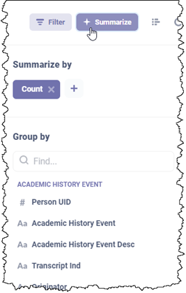
In the upper section, Summarize by, select the metric you want to see. In the lower section, Group by, select how to group that number.
By default, the row count metric is selected. You can summarize by one or more metrics by clicking Add a function or a metric .
- select from basic functions such as sum, average, and count
- pick a common metric that has been defined
- create a custom expression by writing a formula
| Metric | Description |
|---|---|
| Count (of rows) | The total of number of rows in the table, after any filters have been applied. |
| Sum of | The sum of all the values in a specific column. |
| Average of | The average of all the values in a single column. |
| Number of distinct values of … | The number of unique values in all the cells of a single column. This is useful when trying to find out things like how many individual applicants applied last academic period (not how many applications were received, as an applicant could submit more than one application). |
| Cumulative sum of… | Provides a running total for a specific column. For this metric to be useful, group it by a date column to see it across time. |
| Cumulative count of rows | Provides a running total of the number of rows in the table over time. For this metric to be useful, group it by a date column to see it across time. |
| Standard deviation of … | A number which expresses how much the values of a column vary, plus or minus, from the average value of that column. |
| Minimum of … | The minimum value present in the selected field. |
| Maximum of … | The maximum value present in the selected field. |
Select groupings for a metric
Depending on the grouping column you select, Insights displays what it thinks is the best default visualization or chart for this summary. For example, if you select a date column, you might see a line chart depicting a trend over time.
When you click a different grouping column, the grouping switches to use that column instead. But, if you want to add an additional grouping, click the Add button () on the right of the column name.
Some grouping columns give you the option of choosing how big or small to make the groupings. For example, if you select a Date column to group by, click the qualifier by month to change the grouping to week, day, hour, quarter, year, etc.
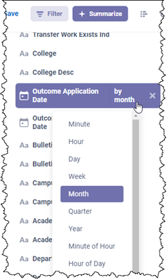
If grouping by a numeric column, such as age, Insights automatically groups or bins the results, so you will see your metric grouped in age brackets, like 0–10, 11–20, 21–30, etc. Similar to grouping dates, you can click on the current grouping option to change it to a specific number of bins.
If you summarize and add a grouping, you can then summarize again. You can also add steps to filter or join in between.
For example, your first summarization step is to get the count of registrations for every section of American History 101 for the past two academic years. Then you can add a second summarization step to get the average section enrollment by selecting the Average of… your count column.
After configuring your metrics and groupings, click Done to close the Summarize sidebar and view your results.
Join data in the query builder
You can use query builder to combine data with another table, or with a saved report.
Click Join Data to add a join step during the creation of a new report. You will be prompted to pick the data that you want to join.
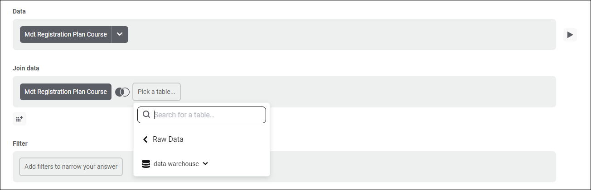
After selecting the data you want to join, you must pick the columns you want to join on. Select a column from the first table and a column from the second table. The join stitches rows together where the value from the first column is equal to the value in the second column.
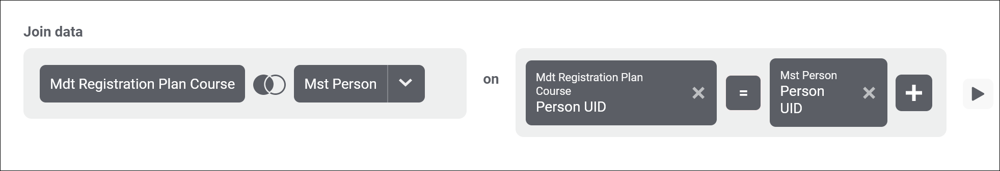
By default, a left outer join will be used however you can change this. Click Change join type located between the two tables you selected to join.
- Left outer join: select all records from first table, along with records from second table that meet the join condition, if any.
- Right outer join: select all records from second table, along with records from first table that meet the join condition, if any.
- Inner join: only select the records from both tables, where the join condition is met.
- Full outer join: select all records from both tables, whether or not the join condition is met.
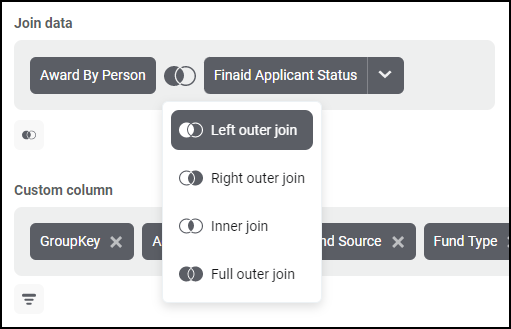
Join data with multiple join steps
There may be instances where you want to join multiple tables where not all the tables have a connection to each other. To do so, you must use multiple join steps. After you have completed your initial join data step, click Join Data to add another join step. This will take the results of the first join data step, and allow you to select another table to join.
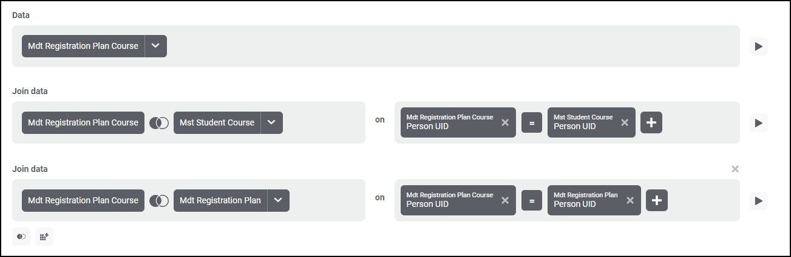
Join data with multiple conditions
Your joins can also include conditions to refine your results. Use the AND operator to combine multiple conditions.
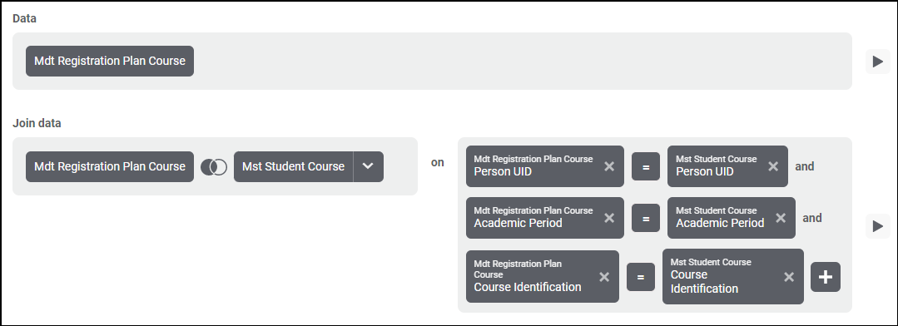
Join data with different operators
You can also join tables on comparison conditions like =, ≠, <, >, ≤, ≥. To change your comparison condition, click the square that is between the two columns you select for your table join.
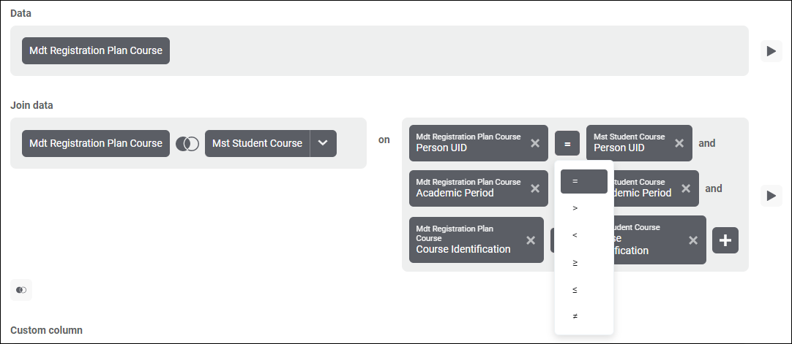
SQL queries in Insights
If you need to write a query that you cannot write using the query builder and editor, you can use SQL instead.
Where to begin
You can create a new SQL query by clicking from any page in Insights. Then you can begin writing SQL directly into the editor that appears.
You can also use an existing report as a starting point for a SQL query. To do this, go to a report and click the Editor button . Then click View SQL
to display the SQL behind the report. You can copy and paste this SQL for future use. Or you can click Convert this report to SQL to use this as the starting point of a new query in the SQL editor. This is a handy shortcut to use the existing SQL generated by Insights, and then tweak and customize the query, saving it with a new report name.
Just like reports created with the query builder, you can save and download reports created with a SQL query. You can also add them to dashboards.
Run your SQL query
To test the report you are building, click the Run query button to run the SQL query. You can also run your SQL query by pressing Ctrl + Enter on Windows and Linux, or Cmd + Return on a Mac.
Using SQL filters
If you or someone else wrote a SQL query that includes variables, your report might have filter widgets at the top of the screen. Filter widgets let you modify the SQL query before it runs, changing the results you might get.
See Add a basic input variable to a SQL report and Add a field filter to a SQL report for more information.
Create SQL snippets
SQL snippets are saved pieces of SQL code that you can reuse and share with other advanced report designers who write SQL queries. Anyone with SQL editor permissions for at least one database can use, create, and edit snippets.
To create SQL snippets, you must be in the SQL editor. Within the SQL editor you can create an SQL snippet by right-clicking a highlighted section of your SQL statement and selecting Save as snippet. Then save your snippet in the Our Snippets folder.
You can also create a snippet by clicking the SQL Snippets button . Followed by the New button , and then select New snippet.
You can also make a copy of an existing snippet. From within the SQL editor, click the SQL Snippets button , then locate the snippet you want to make a copy of. Click the expand button  to display the SQL being used and copy that to your computer's clipboard or into a text editor. Followed by the New button , and then select New snippet. Paste the SQL statement into the Enter some SQL here so you can reuse it later: required field.
to display the SQL being used and copy that to your computer's clipboard or into a text editor. Followed by the New button , and then select New snippet. Paste the SQL statement into the Enter some SQL here so you can reuse it later: required field.
Saved snippets
Saved SQL snippets are stored within folders. These folders are divided into two groups: Ellucian Snippets and Our Snippets.
Ellucian Snippets is where you will find any delivered snippets provided by Ellucian, that can be used at your discretion. Our Snippets is the location where report writers at your institution should save any snippets that they have created.
Use SQL snippets
To use SQL snippets, you must be in the SQL editor. Within the SQL editor you can use SQL snippets by clicking the SQL Snippets button and selecting the snippet you want to use.
You can also use snippets by typing {{snippet:}}. As you start typing after the colon (:) the SQL editor presents a list of available snippets.
Add a basic input variable to a SQL report
When you create a report using SQL, you can include a filter to enable users to refine the data that the report displays. To do so, you can use a basic input variable.
About this task
- Simple text, number, and date filtering.
- Innumerable values that would not work within a drop-down menu.
- Instances where data wrangling is required on the input variable in your SQL.
Field filters, however, are unique input variables. Field filters are connected to columns, and can provide a drop-down menu for users to select one or more values. For more information about field filters, see Add a field filter to a SQL report.
To use a basic input variable you must add a WHERE clause to your SQL query. The WHERE clause uses abbreviated syntax that precludes the requirement for an operator such as =. The format of the clause is WHERE {{variable_name}}, where variable_name is the name you want to use for the basic input variable.
Procedure
Add a field filter to a SQL report
When creating a report with SQL, you might also want to include a filter to display relevant data at a glance. You can do this by leveraging a special variable known as a field filter.
About this task
WHERE clause to your SQL query. The WHERE clause uses abbreviated syntax so there is no need for an operator such as =. The format of the clause will be WHERE {{variable_name}}, where variable_name is the name you want to use for the field filter variable.- Category
- Entity name
- Entity key
- Foreign key
- City
- State
- Zip or Postal code
- Date
- Time stamp
Procedure
Connect a dashboard filter widget to a field filter variable
Add a field filter variable from a SQL report to a dashboard to use as a filter widget.
Before you begin
Procedure
-
Click Edit dashboard to start editing.
When you start with a new dashboard, you automatically enter edit dashboard mode.
Connect a SQL report to a drop-down filter widget on a dashboard
Add a drop-down filter widget to a dashboard using a SQL report.
Before you begin
About this task
Procedure
-
Click Edit dashboard to start editing.
When you start with a new dashboard, you automatically enter edit dashboard mode.
Save your report
When you save your report, Insights also saves the visualization option you chose for your report.
After you click Save, a dialog box appears, prompting you to provide a name and description, and to pick which collection to save it in. Depending on your level of access to collections, you might only have permission to save reports in certain collections. You can always save reports and collections in your Personal Collection.
After saving your report, Insights asks if you want to add it to a new or existing dashboard.
You can find your saved report by searching for it in the search bar at the top of Insights, or by navigating to the collection where you saved it.
Edit a report
To edit a saved report, click the down arrow that appears to the right of the report's title to display the Report Detail sidebar.
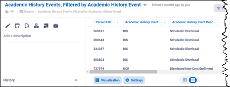
The Report Detail sidebar gives you editing tools for the report.
| Tool | Description |
|---|---|
| Edit details | Change the title of the report and add some description for context. Adding a description will also make the report easier to find using the search bar. |
| Add to dashboard | Add this report to a dashboard in this collection. |
| Move | Relocate the report to a different collection. You must have Edit permission for the collection you want to move this report to. |
| Model | For future use. |
| Duplicate | Create a copy of the report. Keep in mind that whenever you start editing a saved report, Insights creates a copy of the report. You can either save your edits as a new report or overwrite the original saved report. |
| Archive | Archives your report. |
| History | To view a log of changes to this report, including edits and verifications, open the History section at the bottom of the sidebar. To reinstate the report at the time of the edit, click Revert below the entry in the timeline you want to reinstate. |
Download a report or dashboard
Insights provides the capability to download saved reports and dashboards to view and use offline.
Download a report
Download a report by clicking Download results .
- Navigate to a report that you want to download.
- Click Download results at the bottom of the page.
- Choose the file format that you want for your report.
- Navigate to a dashboard that contains the card you want to download.
- As you hover over the card you want to download, click More .
- Click Download results .
- Choose the file format that you want for your report.
Download a dashboard
When you view a dashboard, to download a snapshot, click Sharing .
- Navigate to a dashboard that you want to download.
- Click Sharing .
- Select Export as PDF.
Considerations
- You can only download a dashboard in PDF file format.
- You can only download a report in CSV, XLSX, JSON, or PNG file formats.
- The maximum download size is 1 million rows.
- Exported XLSX files preserve the formatting defined in the report: date and currency formats are kept throughout, in addition to column ordering and visibility.
- Exported CSV or XLSX files include the header row. There is no option to remove the header row.
- File names for the exported dashboard are the same as the title of your dashboard.
- File names for the exported report include the report title and a time stamp to easily distinguish files when exporting multiple reports.
Visualization types
While data tables are useful for looking up information or finding specific numbers, the best way to see trends and make sense of your data is to present it in a chart or visualization.
This topic introduces the many options for visualizing a report in Ellucian Insights.
To change how your report displays, click Visualization to open the visualization sidebar.
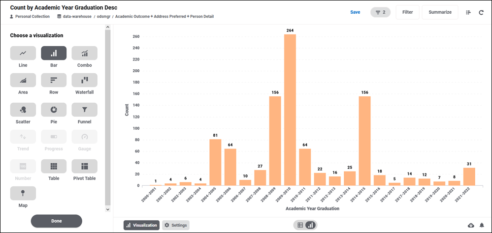
When the report displays its results, you can save the report, download the results, or add the report to a dashboard.
- Numbers
- Trends
- Detail
- Progress bars
- Gauges
- Tables
- Pivot tables
- Line, bar, and area charts
- Combo charts
- Row charts
- Histograms
- Visualization options for line, bar, and area charts
- Waterfall charts
- Scatter plots and bubble charts
- Pie and donut charts
- Funnels
- Maps
Numbers
- Adding character prefixes or suffixes to it (such as a currency symbol in front, or a percent at the end).
- Setting the number of decimal places to display.
- Multiplying your result by a number. For example, you could multiply a decimal by 100 to make it look like a percent. Or, if you want to divide by a number, you can multiply it by a decimal.
Trends
The Trend visualization shows how a single number has changed over time.
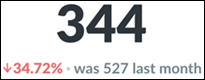
By default, Trends display increases as green and decreases as red. However, you can reverse the positive/negative color indicators in the visualization settings.
Detail
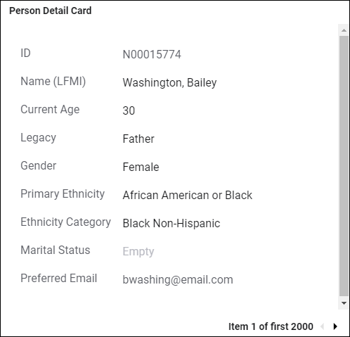
Progress bars
Use Progress bars to compare a single number to a goal value that you set.
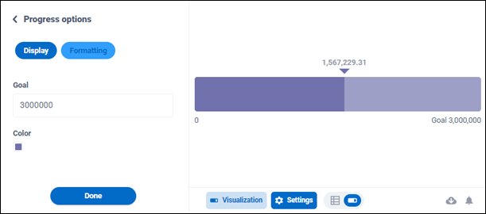
To set the goal for your Progress bar, go to Settings and choose a value for your goal. Insights shows you how far away you are from the goal.
Gauges
Gauges allow you to show a single number in the context of a set of colored ranges that you can specify. By default, when you choose the Gauge visualization, Insights creates red, yellow, and green ranges for you.
Open up the visualization settings to define your own ranges, choose colors for the ranges, and optionally add labels to some or all of your ranges.
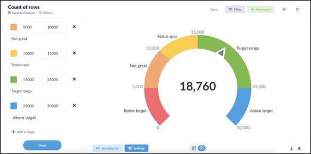
Tables
The Table visualization is a good option for viewing tabular data or lists. The options for table visualizations allow you to add, hide, or rearrange fields in the table you are looking at, in addition to modify the formatting.
Formatting for table visualizations contains details about formatting and visualization settings for tables.
Pivot tables
A pivot table groups rows and columns, and includes summary rows with aggregate values for those groupings. They’re called pivot tables because you can rotate (“pivot”) a column 90 degrees so that the values in that column become column headings themselves.
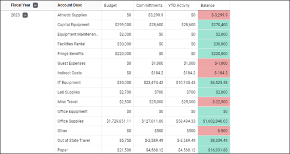
Line, bar, and area charts
Insights offers several options for chart visualizations. Generally, line charts are used to display the trend of a number over time, especially when you have lots of x-axis values.
Bar charts are a good option to display a number grouped by a category (such as the number of students you have by country). Bar charts are also useful for showing a number over time if you have a smaller number of x-axis values (like applications per month this year).
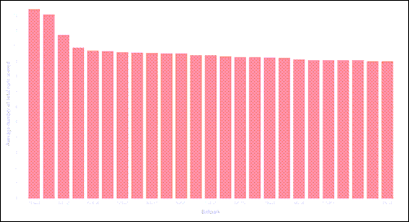
Area charts are useful when comparing the proportions of two metrics over time. You can stack both bar and area charts.
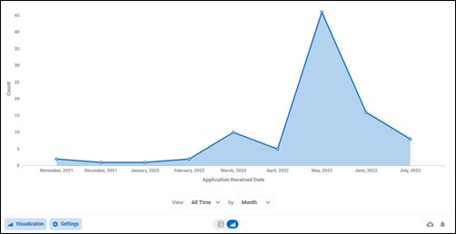
Trend lines are another useful option for line, area, bar, and scatter charts. If you have a report in which you are grouping by a time field, open up the visualization settings and turn the Show trend line toggle on to display a trend line. Insights will choose the best type of line to fit to the trend of your series. Trend lines will even work if you have multiple metrics selected in your summary. However, trend lines will not work if you have any groupings beyond the one-time field.
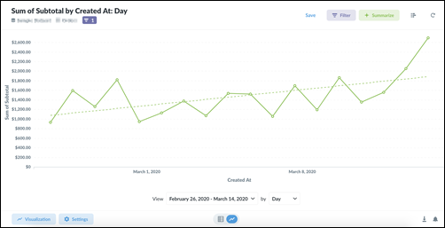
Combo charts
Combo charts let you combine bars and lines (or areas) on the same chart.
Insights will pick one of your series to display as a line, and another to display as a bar by default. Go to the visualization settings to change which series are lines, bars, or areas, in addition to changing per-series settings like colors. Click the down arrow at the right of a series to see additional options.
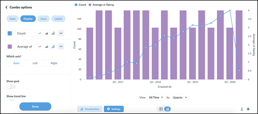
There are two approaches to setting up a Combo chart:
- Select two or more metrics in the Summarize By section of your report, with one or two grouping columns.
- Select a single metric and have two grouping columns.
Row charts
If you want to group a number by a column that has a lot of possible values, such as a list of section codes, try visualizing it as a row chart. Insights shows the bars in descending order of size, with a final bar at the bottom for items that did not fit.
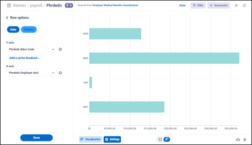
Histograms
If you have a bar chart like Count of Graduates by Age, where the x-axis is a number, you will see a special kind of chart called a histogram. In histograms, each bar represents a range of values (called a bin). Note that Insights will automatically bin your results any time you use a number as a grouping, even if you are not viewing a bar chart. Reports that use latitude and longitude are also automatically binned.
By default, Insights chooses a good way to bin your results. But you can change how many bins your result has, or turn the binning off entirely by clicking the area to the right of the column being grouped by.
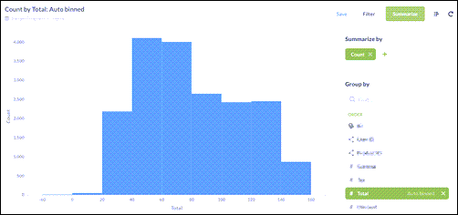
Visualization options for line, bar, and area charts
Line, bar, and area charts have very similar options: data, display, axes, and labels.
The Data option allows you to choose the columns to plot on your x and y axes. This is mostly useful if your table or result set contains more than two columns (such as graphing fields from an unaggregated table).
You can also add metrics to your chart by clicking the Add another series link below the y-axis drop-down, or break your current metric out by an additional dimension by clicking the Add a series breakout link below the x-axis drop-down.
The Display option offers many choices, but the available choices depend on the data in your chart. Some of the display choices include:
- Set the colors and labels for the series on your chart.
- Change the style of your lines for Line and Area charts and choose whether to display dots on the lines.
- Specify how to handle missing values. Use the “Replace missing values with…” setting to change how your chart deals with missing values. You can use linear interpolation or display those points as zero or as nothing.
- Add a trend line. If you have a time series chart, you can turn on a trend line to show where things are heading.
- Show values on data points. The default setting will try and fit as many values on your chart as will fit nicely, but you can also force Insights to show the values for each and every data point. Showing values also works with multi-series charts, but be aware that the more data points you add, the more crowded with values the charts become.
Use the Axes option to configure your axes in one of three ways:
- Change the scale for your axes. If creating a time series chart (such as a year over year comparison), your x-axis can use a time series scale or an ordinal one. A time series scale displays in ascending order, oldest to newest, while an ordinal scale displays in the order the data is returned. Your y-axis can use a linear, power, or logarithmic scale.
- Hide or show the tick marks on your axes. You can also choose to rotate the tick marks on the x-axis to help them fit better.
- Edit the range of your y-axis. Insights sets an automatic range by default, but you can toggle that off and input a custom minimum and maximum value for the y-axis.
The Labels option is where you choose to hide the labels for your x- or y-axis. You can also customize the text for your axes labels here.
Waterfall charts
Waterfall charts are a kind of bar chart useful for visualizing results that contain both positive and negative values. Each bar on a waterfall chart shows either an increase or decrease, with a final bar on the right of the chart that represents the total value.
For waterfall charts, use a query that is a single metric grouped by a single dimension (time or category).
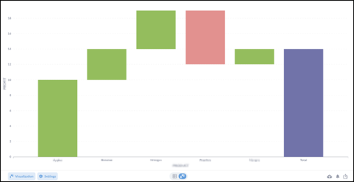
Scatter plots and bubble charts
Scatter plots are useful for visualizing the correlation between two variables, such as comparing the age of your students compared to how many credits they register for in an academic period. To use a scatter plot, you need a report that results in two numeric columns, such as Number of Credits grouped by Student Age. Alternatively, you can use a raw data table and select the two numeric fields you want to use in the chart options.
If you have a third numeric field, you can also create a bubble chart. Select the Scatter visualization, then open up the chart settings and select a field in the bubble size drop-down. This field will be used to determine the size of each bubble on your chart.
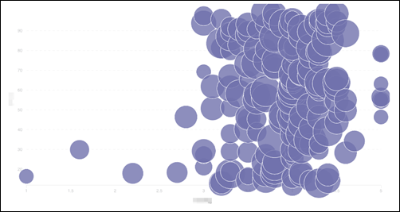
Scatter plots and bubble charts also have similar chart options as line, bar, and area charts, including the option to display trend or goal lines. Refer to Visualization options for line, bar, and area charts for details.
Pie and donut charts
A pie or donut chart can be used when breaking out a metric by a single dimension, especially when the number of possible breakouts is small. If you have more than a few breakouts, consider using a bar chart so that your users can more easily compare the relative sizes of each bar.
The pie chart options allow you to choose which field to use as your measurement, and which one to use for the dimension (the pie slices). You can also customize the color of each slice, the pie chart’s legend, whether or not to show each slice’s percent of the whole in the legend, and the minimum size a slice needs to be in order for Insights to display it.
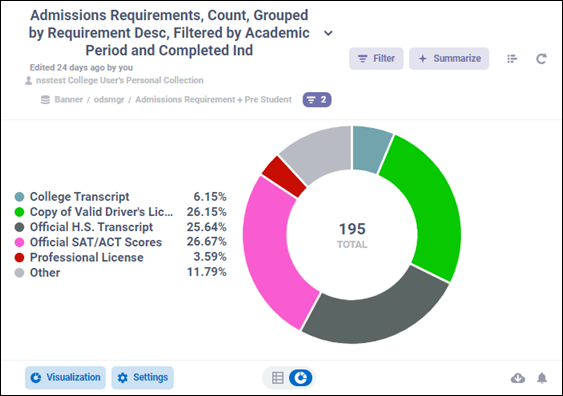
Funnels
To create a funnel in Insights, you need a table with at least two columns: one column that contains the metric you are interested in, and another that contains the funnel’s steps.
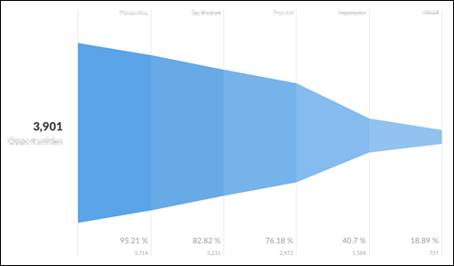
Maps
When you select the Map visualization setting, Insights finds the best kind of map to use based on the table or result set: a United States Map, World Map, or Pin Map.
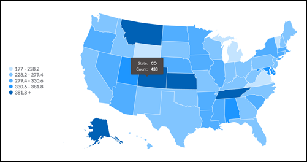
- Creating a map of the United States from your data requires your results to contain a column that contains names of states or two-letter state codes.
- To visualize your results in the format of a map of the world broken out by country, your result must contain a column with two-letter country codes.
- If your results contain a latitude and longitude field, Insights tries to display the results as a Pin Map of the world. Insights puts one pin on the map for each row in your table, based on the latitude and longitude fields.
When you open up the Map options, you can manually switch between a region map (for example, United States) and a Pin Map. If you are using a region map, you can also choose which field to use as the measurement, and which field to use as the region (such as State or Country).
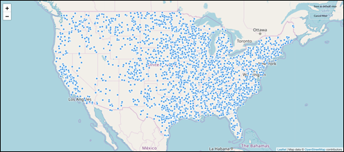
Formatting for table visualizations
Depending on the type of information you want to present, you can select from one of the many table formats for your report visualization.
How to rearrange, add, and remove columns
When you click Settings for your table, the Columns tab displays all the columns currently being shown in the table. Below that list are more columns from linked tables, if any, that you can add to the current table view.
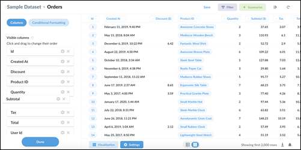
- To hide a column, click the X next to it. The column moves to the More columns area in case you want to bring it back.
- To add a linked column, click the + button on it to bring it to the Visible columns section.
- To rearrange the order of the columns, click and drag the listed columns.
- If you want to reorder columns without opening the visualization settings, you can click and drag a column’s heading to move it when viewing the table.
Changing these options does not change the actual table itself. These changes create a custom view of the table that you can save as a report in Insights. You can later refer back to that report, share it with others, or add it to a dashboard.
Column formatting options
To format the display of any column in a table, click the column heading and choose Formatting option. You can also get there by clicking the gear button on any column when in the Columns tab of the visualization settings.
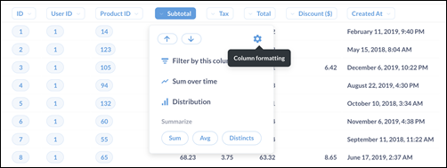
The available formatting options depend on the type of column you are viewing.
- Date style lets you select how to display the date.
- Enable Abbreviate names of days and months to change January to Jan, Monday to Mon, and so on.
- Show the time lets you decide whether to display the time, and if so, how. You can include hours and minutes, and additionally seconds and milliseconds.
- Show a mini bar chart displays a small horizontal bar next to each number in this column to show its size relative to the other values in the column.
- Style lets you choose to display the number as a plain number, a percent, in scientific notation, or as a currency.
- Separator style gives you various options for how commas and periods are used to separate the number.
- Minimum number of decimal places forces the number to be displayed with exactly this many decimal places.
- Multiply by a number multiplies each number in this column by whatever you type here.
- Add a prefix/suffix lets you put a symbol, word, etc. before or after each cell value.
- Unit of Currency lets you change the unit of currency from the system default.
- Currency label style allows you to switch between displaying the currency label as a symbol, the full name of the currency, or as a code, such as (USD).
- Where to display the unit of currency lets you toggle between showing the currency label in the column heading or in every cell in the column.
Conditional table formatting
It may be helpful to highlight certain rows or columns in your tables when they meet a specific condition. You can set up conditional formatting rules by going to the visualization settings while looking at any table, then click the Conditional Formatting tab.
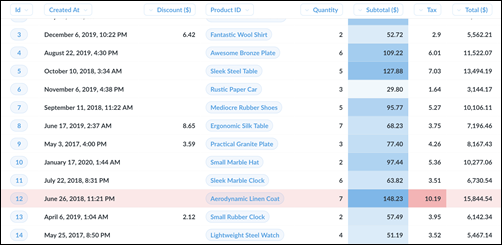
- Select Single color if you want to highlight cells in the column if they are greater, less than, or equal to a specific number, or if they match or contain a certain word or phrase. You can optionally highlight the whole row of a cell that matches the condition you pick so that it is easier to spot as you scroll down your table.
- Choose Color range if you want to tint all the cells in the column from smallest to largest or vice versa. This option is only available for numeric columns.
You can set as many rules on a table as you want. If two or more rules disagree with each other, the rule that is on the top of your list of rules takes precedence. You can click and drag your rules to reorder them and click a rule to edit it.
Auto-pivoted tables
If your table is a result that contains one numeric column and two grouping columns, Insights automatically pivots your table, as in the example below.
Pivoting takes one of your columns and rotates it 90 degrees so that each of its values becomes a column heading. If the auto-pivot is not what you want, you can open the visualization settings and choose which column to pivot or you can also turn the pivoting behavior off entirely.
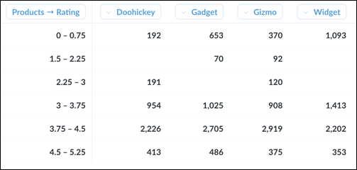
Pivot tables
Pivot tables allow you swap rows and columns, group data, and include subtotals in your table. You can group one or more metrics by one or more dimensions.
Pivot tables work for any report with summarized data. They do not work for reports that lack aggregate data, and they do not work for reports written in SQL, as Insights would need to modify your SQL code to calculate subtotals.
- Fields to use for the table rows
- Fields to use for the table columns
- Fields to use for the table values
How to use drillthrough capability in charts
When creating charts using the query builder, you can make them explorable with drillthrough capability.
When viewing charts, click on values in the chart to display an action menu that gives different options to drill through the chart’s data.
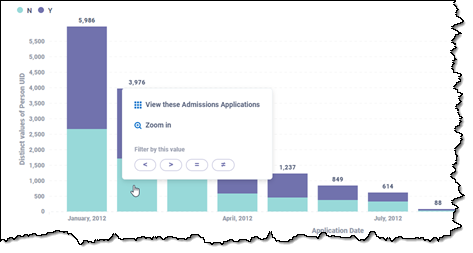
To illustrate the drillthrough options available in the action menu, use this sample report built to display counts of each admission decision type, summarized by the decision types, excluding the University Acceptance decision type.
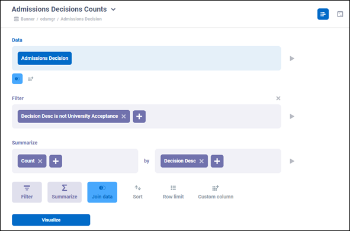
The visualization has been set to a bar chart.
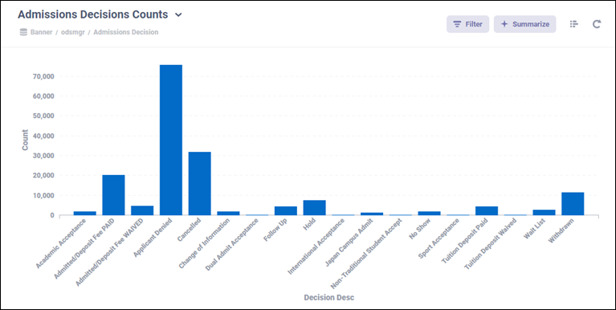
The action menu presents a few drillthrough options that you can choose from to further explore your data.
In our example, we click the Applicant Denied bar.
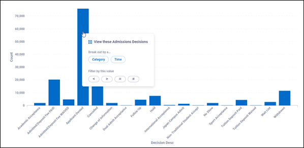
From the action menu, you can choose from several actions.
View specific records
You can click a value on a chart and select view the records that for that value.
In our example, clicking the Applicant Denied bar and then selecting View these Admission Decisions displays a table with the individual records that compose the value.
Breakouts
Breaking out by a category lets you drill into your data and then see it by a certain dimension. In our example report, you could break out the number of applicants who withdrew their applications and then by the month of the year. This may help you identify certain trends.
Different charts offer different breakout options, such as Location and Time.
Zoom in your data
Depending on the type of report you are building, you may be able to zoom in on your data.
There are two ways to zoom in:
- Click and drag to select an area of a chart to zoom in on.
- From the action menu, select Zoom in and Insights creates a closeup of the data surrounding the value you selected.
The Zoom in feature selects an appropriate range of values based on the full range of values in the chart. The Zoom in feature also focuses on the clicked category so only the data in the clicked category are shown. To select a different range or include other groups, you can use the editor to refine your chart and save it as a new report.
Find new reports
The action menu is an excellent tool for exploring your data, especially if you are not sure what reports you can build. Start with a broad query, then experiment with the options on the action menu. When you discover an insightful cut of the data, save it as a new report, and then refine the visualization as needed. If you are an advanced user, convert it to a SQL query.
Build custom expressions with the query builder
Custom expressions are formulas that allow you to create more complex queries.
Custom expressions to create filters, metrics, and custom columns
To create and use a custom expression, click Custom column , or click Filter or Summarize to add a custom expression.
- Filters. For example, the expression
= contains([Column], "Ellucian")would filter rows where theColumnfield contains the word "Ellucian". - Metrics. Also known as summaries or aggregations. For example,
= student([courseCredit] ≥ 3.5)would return students who have a course credit of 3.5 or higher. - Custom columns. You could use
= [Column] / [Column]to create a new column.
Types of expressions
- Aggregations take values from multiple rows to perform a calculation, such as finding the average value from all values in a column. You can only use aggregation functions in the Summarize section of the query builder, because aggregations use values from all rows for that column.
- Functions, by contrast, do something to each value in a column, like searching for a word in each value, rounding each value up to the nearest integer, and so on.
To view all supported Aggregations and Functions, see Supported expressions.
Basic mathematical operators
You can use +, -, * (multiply), / (divide) on numeric columns with numeric values. You can also use ( ) (parentheses) to group your expressions.
For example, you could create a new column that calculates student account balance: = [Column] - [Column].
= [Column] - [Column].Conditional operators
Insights permits conditional operators AND, OR, NOT, >, ≥ (greater than or equal to), <, ≤ (less than or equal to), =, ≠ (not equal to).
For example, you could create a filter for students from California or Vermont: = [Column] = "CA" OR [Column] = "VT".
Filter expression and conditions
- Filter expressions must return a Boolean value (something that is true or false). For example, you could write
[Column] + [Column] < 100. This will look at each row, add the two columns, and check if that sum is less than 100. If it is, the statement evaluates as true and will include the row in the result. However a filter such as[Column] + [Column]would not be valid because it does not evaluate to true or false. - Functions can be used within conditional portions of the
CountifandSumifaggregations, such as:countif( round([Column]) > 100 OR floor([Column]) < 10 ).
Working with dates in filter expressions
Dates in filter expressions need to use the format YYYY-MM-DD.
For example, between([Column], "2020-01-01", "2020-03-31") OR [Column] > "2019-12-25" would return rows where Column is between January 1, 2020 and March 31, 2020, or where Column is after December 25, 2019.
Create and design dashboards
An Insights dashboard groups one or multiple reports and presents them on a single page with the option of adding definable filters. Dashboards become shareable reports that feature a set of one or more related reports.
About this task
A dashboard is comprised of one or more reports arranged on a grid. These can be reports in the format of tables, charts, or maps. You can even add text boxes to enhance dashboards.
You can add user-definable or global filters to a dashboard to filter data identically across multiple reports. You can also customize what happens when people click on a chart or a table.
Procedure
-
To add a saved report directly to your new dashboard, select one of these methods.
- Add a newly saved report to a dashboard directly from the window that pops up after you save the report for the first time.
- When viewing a report, click the More menu and select Add to dashboard.
- On a dashboard, click Edit dashboard. Then click Add reports to add any of your saved reports to the new dashboard.
-
You can add headings or descriptions to the dashboard with text boxes.
Text boxes allow you to include descriptions, explanations, notes, or even images and GIFs to your dashboards. You can use headings to create separations between sections of charts in your dashboards.
-
Click Edit dashboard.
See Add text, images, and headings to dashboards for more information. -
Click
-
You can also arrange the cards on the dashboard to suit your needs.
Each report on a dashboard is in its own card that you can move around or resize as you see fit.
-
Click Edit dashboard.
A grid appears to assist with your layout choices. The cards snap to the grid.
-
Move, resize, duplicate, replace, or remove cards from the dashboard.
- To move a card, click and drag the card. Other cards will move out of the way.
- To resize a card, click the handle at the bottom right corner of the card, and drag to resize. Nearby cards will move away to accommodate the new size.
- To duplicate a card, hover over the card and click Duplicate.
- To replace the report in a card, hover over the card and click Replace .
- To remove a card, hover over the card and click
 Remove in the top right corner.
Remove in the top right corner.
Explore other options in the hover menu for more ways to present a report on this dashboard.
-
Click
-
You can use dashboard tabs to keep cards organized across multiple tabs.
Dashboard tabs allow you to keep related information on one dashboard but organize key metrics on separate tabs.
-
Click Edit dashboard.
- Click next to the default tab (Tab 1) to add a new tab.
- To move a card to a new tab, hover over the card and then hover over Move to tab and select the tab to move to.
- To duplicate a tab, click next to the tab name and select Duplicate.
- To rename a tab, click next to the tab name and select Rename.
- To remove a tab, click next to the tab name and select Delete.
- To rearrange the dashboard tabs, simply click the tab name and drag it left or right.
-
Click
-
Make other changes to a report's visualization settings as desired.
For example, you may want to add a goal line to recruiting funnels or change the colors in your bar charts.
-
Click Edit dashboard.
- Hover over the report to edit and click the palette button.
- Make any adjustments to the report display.
- Click Done to save your settings.
-
Click
- Optional:
Set the width of your dashboard.
You can set the width of your dashboard between fixed width or full width (default). When using a fixed width, the width of the dashboard will remain constant. Use this feature to size dashboards for tablets or other devices. When using full width, the width of the dashboard will dynamically extend to the edge of the web browser.
-
Click Edit dashboard.
-
Click
What to do next
Additional Insights dashboards considerations
Consider these additional tips when building and sharing your Insights dashboards.
How to prioritize dashboards in a collection
After a while, you might accumulate a lot of dashboards. To make it easier to find dashboards that your team looks at often, you can pin them to the top of a collection.
From the collection screen, click and drag a dashboard to the top, or click the More menu and select Pin this item.
Automatic data refreshes
If your data updates frequently, you can set up automatic refreshes for your data. Automatic refreshes re-run all the queries on the dashboard at the interval you choose. It is important to keep in mind the size of your dashboard and the complexity of the reports when you set up automatic refreshes. The larger the amount of data and the more complex the reports can impact runtime performance.
To set up automatic data refreshes, click Auto-refresh to set the refresh rate. You can set your dashboard to update in 1, 5, 10, 15, 30, and 60 minute intervals.
Archive a dashboard
When you archive a dashboard, it only removes the dashboard from searches and collections. It does not archive the individual saved reports on it, only the dashboard.
To archive a dashboard, click the More menu then select .
Additional tips for creating helpful dashboards
To make a great dashboard, first decide what you want the dashboard to communicate about your data. What reports will provide insight into what you want to know? It helps to think of a topic or theme for your dashboard, such as recruitment goals or section enrollment trends.
- Emphasize the most important reports. To focus attention on what matters most, position the most important saved reports near the top of the dashboard. Consider making them larger than the other cards.
- Keep dashboards focused. If you have more than ten reports on a dashboard, consider breaking the dashboard into two separate ones. You do not want to overwhelm people with too much information, and each dashboard should revolve around one theme or topic. Remember that you can make as many dashboards as you want, so you do not have to add every report into one dashboard.
- You can add filters to make your dashboards more useful. For example, you could use a time-span filter to limit the data on the dashboard to be within a specified time. See Insights dashboard filters.
- Make your dashboards interactive. Customize what happens when users click on a chart or a table in your dashboard. See Interactive features for dashboards.
- Dashboard tabs allow you to keep cards organized over multiple tabs. See Step 6 of Create and design dashboards.
Insights dashboard filters
You may find that you need to create nearly identical copies of a dashboard with just one or two different variables. Rather than duplicating that dashboard and making small changes, you can use dashboard filters to create simple toggles to change a report's variables on a single dashboard.
To add a filter to a dashboard, click Edit dashboard to enter dashboard editing mode. Next, click Add a Filter .
Types of dashboard filters
The type of filter you choose determines how the filter works. The filter type also determines the fields that can be used to filter your cards.
| Filter type | Details |
|---|---|
| Time | When you pick a Time filter, Insights prompts you to pick a specific type of filter widget:
|
| Location | There are four types of Location filters to choose from:
|
| ID | The ID filter provides a simple input field where you can type the ID of a student, fund account, and so on. |
| Number | You can choose from:
|
| Text or categories | A flexible filter type that allows you to create either a drop-down menu or an input box to filter on any category field in your cards. Options include:
|
Edit filters
- Navigate to a dashboard of your choice.
- Click Edit dashboard .
- Click Settings next to the filter you want to change.
From this filter editing view, you can perform the following actions:
| Edit type | How to |
|---|---|
| Remove a filter | From the sidebar, click Remove. |
| Reorder filter widgets | Click on the left side of the filter widget, then drag the widget to a different position. |
| Set a default filter value | From the sidebar, choose a value from the Default value input field. |
| Make a multi-select filter | From the sidebar, find People can pick and select Multiple values. Note: A multi-select filter with How should people filter on this column? set to Dropdown list or Search box displays a list of values with check boxes.
|
| Change the filter widget type | From the sidebar, choose a value from the How should people filter on this column? input field. |
| Change filter selection values | From the sidebar, find How should people filter on this column? and click Edit (to the right of Dropdown list) to specify where the values should come from:
|
Use filters
After you have added a filter to your dashboard, click on the filter widget to select a value. When a value is selected, this activates the filter. To stop using a filter, click within the filter widget.
When using filters on a dashboard with multiple tabs, or when adding additional tabs, Insights hides filters automatically if they are not linked to reports within the selected tab.
Filter widget types
From the filter settings sidebar, you can locate the widget types under How should people filter on this column?.
| Filter widget type | Description |
|---|---|
| Dropdown list | A list of all of the possible values in a column. |
| Search box | A search box that suggests a list of matching filter values as you type. |
| Input box | An input box that lets users enter plain text. |
How to link filters
You can also link filters to enable child filter to inherit filter selections that are activated in the parent filters.
For example, you have two filters, one to filter by State and the other to filter by City. You then link the City filter as the child to the State filter as the parent. If you then select California as the state, the city filter will only show cities in California.
- Click Edit dashboard .
- Click Settings on the filter you want to change.
- From the sidebar, select the Linked filters tab.
- To limit the current (child) filter choices, toggle one of the listed filters to make it the parent filter, thereby limiting the choices for the current filter when selected.
For example, in the previous example, we wanted to define the City filter as the child and the State filter as the parent. To do this, you edit the City filter and link it to the State filter. To continue the previous example, you would edit the City filter (child) and link it to the State filter (parent). The choices for the City filter now depend on what State is selected.
- Click to save your changes.
Auto-apply filters
By default, each time you change the value in a filter on a dashboard, the dashboard will refresh the results of each card with the filter value applied. When a dashboard is large, slow, or you want to change the value of multiple filters, you can disable the automatic filtering.
To turn off automatic filtering, click More info, then turn off the toggle for Auto-apply filters.
With the Auto-apply filters setting disabled, when a user selects a filter an Apply button will appear to the right side of the dashboard filters. After all filters are selected, the user can click the Apply button and the dashboard will refresh with all filter selections made.
Best practices
- Limit filters when applicable. Limiting filters makes it easier to quickly understand what options are available when viewing a dashboard.
- Start with a new dashboard. While you can add dashboard filters to an existing Insights dashboard that contains several cards, it can be easier to start a new dashboard, then select the filters you need. This option helps ensure that you only add cards to the dashboard that can be used with the filters. Alternatively, you can duplicate an existing dashboard, and decrease the number of cards.
- Link filters to narrow filter options. For example, you can select cities not in a filtered state.
Set default values for dashboard filters
A dashboard consists of one or more reports arranged on a grid. You can streamline the information that you view, by setting default values for your dashboard filters.
Procedure
Results
What to do next
Interactive features for dashboards
When you create reports using the query builder, they automatically have drill through capabilities. But if you have a more customized click path in mind, Insights allows you to designate the click behavior for components of a dashboard, creating a more interactive dashboard for your report viewers.
- Send the report viewer to Custom destinations, such as another dashboard, report, or a custom URL.
- Update a dashboard using cross-filtering. If your dashboard contains at least one filter, you can configure the dashboard so that clicking on a chart in the dashboard updates a filter.
- Click Edit dashboard .
- Hover over the card that contains the report you want to customize. Insights displays a menu at the top of that card containing these options, from left to right:
- Visualization options
- Click behavior
- Add series. This option displays only if your report has a visualization to which you can add an additional series, such as a line or bar chart.
- Remove. Selecting this will remove your report from the dashboard.
- Click Click behavior.
- Select the desired click behavior from the action menu sidebar for this report.
- Go to a custom destination (see Custom destinations)
- Update a dashboard filter (see Update a dashboard using cross-filtering)
- When you have defined the desired click behavior, click Done in the sidebar.
- Click Save to save your dashboard.
Custom destinations
You can set a custom destination for all reports, including SQL queries, within a dashboard. A custom destination can be a drill-through to another dashboard, a saved report, or a custom URL link.
Customizing click behavior
For table reports, you can select different click behaviors for different columns in the table. You can also modify the column cells, replacing the value with custom text. For example, if you had a column that listed categories, you could change the text in the cell to read: Click for details about {{Category}}, where Category is the name of your column.
- Navigate to a dashboard.
- Click the Edit dashboard button to enter dashboard edit mode.
- While in dashboard edit mode, hover over a report and click the Click behavior button .
- A sidebar menu opens for the selected report.
The sidebar menu displays the currently set click behavior.
- Select Go to a custom destination.
- Select one of the following Link to options:
- Dashboard
- Saved report
- URL
Custom destination - Dashboard or Saved Report
When linking to a dashboard or a SQL query that has filters, you can pass values from the current dashboard to filters in the destination. For example, if you link to a dashboard that has a filter for Academic Period, you can pass a value for Academic Period from the origin report to the destination dashboard.
- Select Dashboard or Saved report from the available Link to options.
- Navigate to a Dashboard or Saved report and select it.A list of available filters displays.
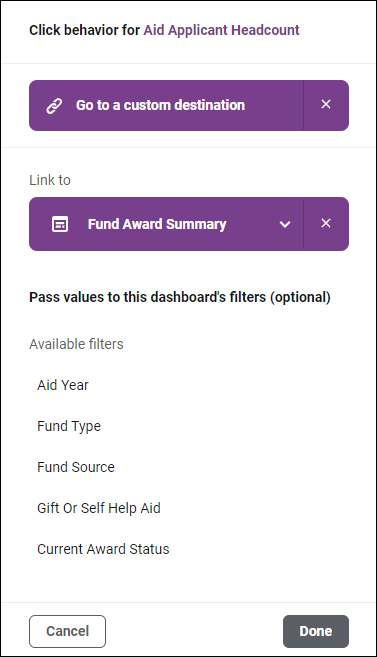
- Select an available filter from the list.A list of available columns displays.
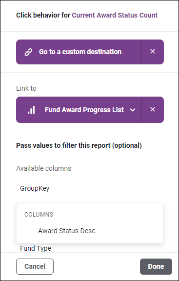
- After selections are made, a visual summary is displayed.
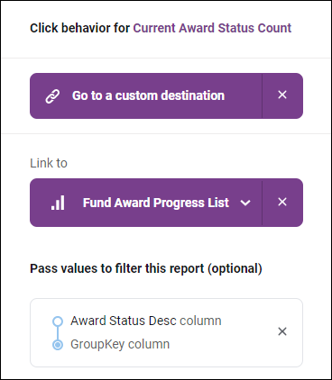
- Click Done.
- Click Save.
Custom destination URL
- Select URL from the available Link to options.
- In the Enter a URL to link to window, enter a URL .
Optionally, you can also pass a value of a column or dashboard filter using its name. To pass a value within the URL, you must use {{column_name}} format. For example, http://ellucianu.edu/id/{{user_id}}.
To view a list of values you can pass within your URL, click Values you can reference on the Enter a URL to link to window.
Update a dashboard using cross-filtering
You can use cross-filtering to make a chart behave as a navigation report, or starting point, that filters data across other cards on the dashboard.
If your report viewer clicks a bar in a bar chart, you can send the value of the clicked bar to the dashboard's filter and update reports across the dashboard. This is known as cross-filtering.
Refer to the following image for an example. Clicking an award status in the Current Award Status Count report will filter the displayed results in the Fund Award Progress List report. Essentially, you will filter all reports on this dashboard by the selected Current Award Status value.
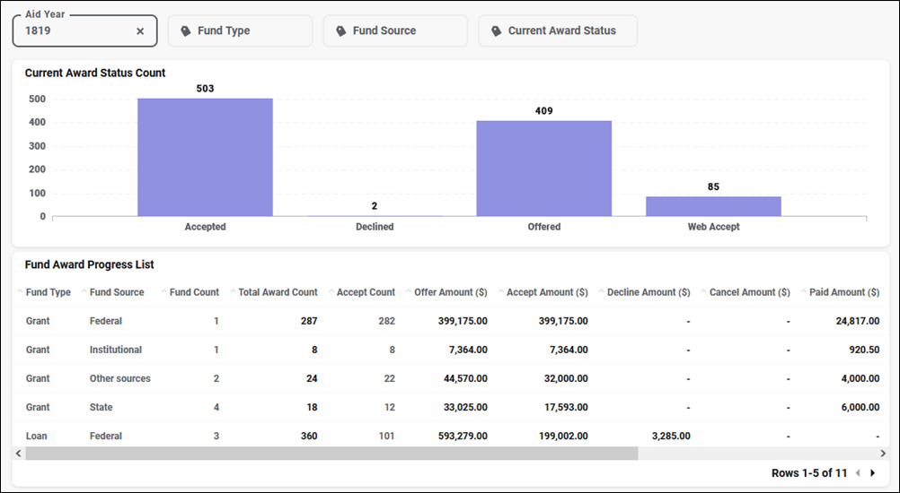
To set up cross-filtering, choose a dashboard filter that you want to update by a report on the dashboard. This is your navigation report. Instead of connecting this navigation report to the filter, you will connect all reports on this dashboard to the filter.
This example uses the Current Award Status Count report as the navigation report. Therefore, do not connect that report to the Current Award Status filter, but connect all other reports to the Current Award Status filter. In the example, there is only one other report.
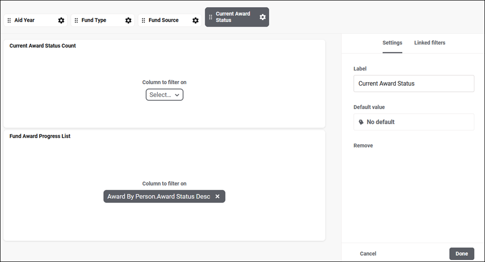
With your filter connected, stay in dashboard edit mode and hover over the report you want to use as your navigation report to filter the dashboard. Click the Click behavior button and select Update a dashboard filter. Insights lists the filters you can update.
In this example, select the Current Award Status Count filter, and supply the value to that filter from the report’s Award Status Desc column of the Current Award Status filter.
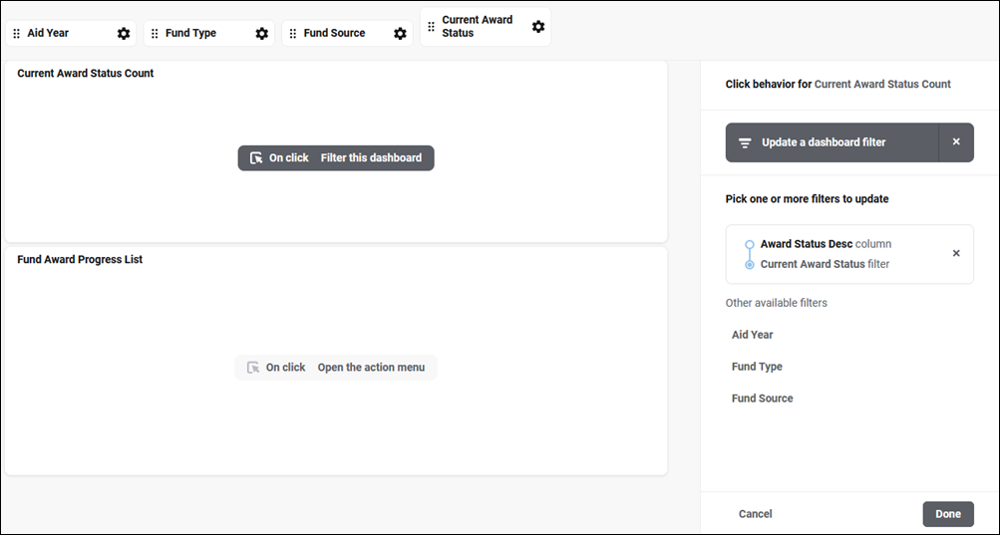
To complete the changes, click Done in the sidebar, then Save your dashboard.
Now you can use your navigation report to interactively filter the data across your dashboard. When your report viewers click on a value in the navigation report, Insights sends the clicked value to the filter, and updates every card on the dashboard by filtering them for the clicked value.
The only card not updated is the navigation report: (Current Award Status Count, in this example). Insights does not update the navigation report because you still want the ability to click other bars to update the filter with a different value.
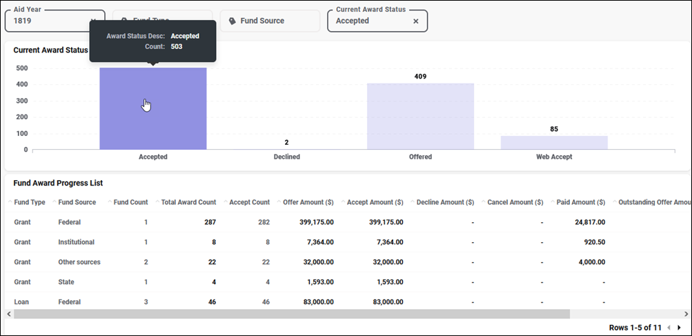
Add text, images, and headings to dashboards
Within Insights, you can enhance your dashboards with text boxes, images, and headings.
Add a text box to a dashboard
- Click Edit dashboard .
- Click Add a heading or text .
- Select Text.
Write in a text box
To write within a text box, or make edits after adding one, make sure that you are in edit mode in your dashboard. You can enter edit mode by clicking Edit dashboard , then click into the box you want to start editing.
Add style to a text box
You can use the lightweight markup language Markdown to add styling to your text box. The following example demonstrates how to use Markdown.
# This is a text box!
*You* can apply styling.
**Just use Markdown!**
Easy as:
1. One
2. Two
3. Three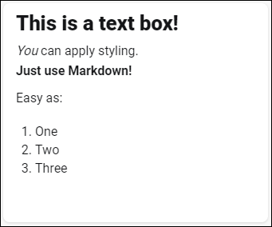
Add an image to a text box
In addition to using Markdown to add styling to your text, you can use Markdown to also add images. The following example demonstrates how to add an image in a text box.
Add a heading to a dashboard
- Click Edit dashboard .
- Click Add a heading or text .
- Select Heading.
Add a link report to dashboards
A link report is a component you can add to your dashboards where you can link to other reports found within Insights. You can also use them for external links.
Adding a link report can be accomplished while editing a dashboard. To begin editing your dashboard, click Edit dashboard . To add a link report, click Add link report . A box with an empty URL appears, this is where you will input your URL. This URL box can also be moved around or resized by clicking and dragging on its bottom right corner.
Duplicate a dashboard
Duplicating a dashboard allows you to experiment by making changes to a dashboard without affecting the original. In addition to duplicating your own custom dashboards, you can also duplicate Ellucian-delivered dashboards.
To duplicate a dashboard, click the More menu and select Duplicate. Provide a new, unique name and description for the new dashboard, and select the collection this dashboard should belong to.
- Unchecked (default) - Copies the dashboard global filters; and all the embedded reports, along with any report modifications made within the dashboard itself.
- Checked - Copies the dashboard and global filters. The dashboard will retain links to render the embedded reports from their original collection location. Note: If users do not have permissions to the original source collection for the embedded reports, they will receive a permissions error message and no content will display in the duplicated dashboard.
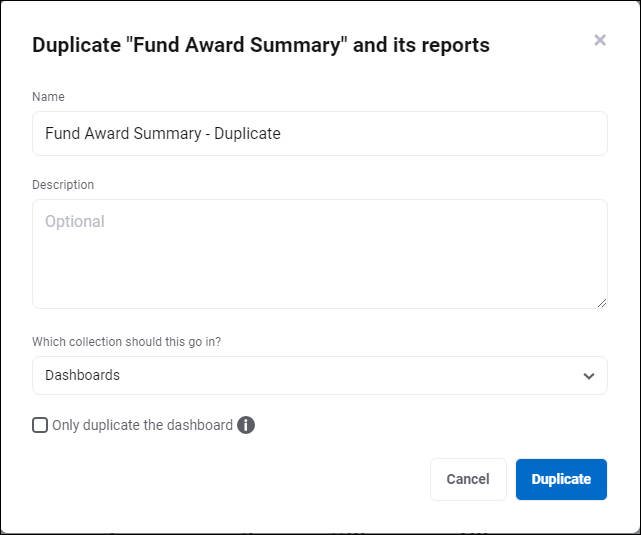
Additionally, if the original dashboard has drill through enabled to another dashboard or report, the drill settings are not included in the duplicate copy. If you want to retain the original drill through, you must also duplicate the target dashboard and then re-apply the drill settings in the parent dashboard.
Create documents
Documents allow Insights users to create and share written content directly within Insights.
Documents provide a space to capture explanations, notes, and supporting information that complement reports and dashboards. For example, a document can be used to describe how metrics are calculated, document data definitions, or guide how to interpret a dashboard.
Documents are stored in collections and follow the same organizational structure and permissions model as reports and dashboards.
Create a document
- From any collection page, click Create and select Document.
- While viewing a collection, select Create and choose Document to create a document within that collection.
- When organizing analytics content, documents can be created alongside reports and dashboards within the same collection.
When creating a document, provide a clear title and meaningful content so other users can easily understand the purpose of the document.
Edit a document
- Add formatted text such as headings, lists, and paragraphs.
- Include links to dashboards, reports, or other documents.
- Provide descriptions of metrics, data sources, or business logic.
- Update content over time as reports or dashboards evolve.
Changes are saved automatically while editing.
Organize documents
- A collection may contain dashboards, reports, and supporting documents.
- A document may describe the purpose of a dashboard or explain how calculations are derived.
- Documents can be moved between collections if the user has the appropriate permissions.
Permissions and access
- Users with access to a collection can view documents stored in that collection.
- Users with editing permissions can update document content.
- Permissions inherited from a parent collection apply to documents stored within that collection.
This ensures that documentation is visible to the same audience as the dashboards and reports it supports.
Recommended uses for documents
- Explaining how dashboards should be interpreted.
- Documenting definitions for key metrics or KPIs.
- Providing data governance or reporting guidelines.
- Capturing institutional knowledge about data sources.
- Sharing instructions for report usage or troubleshooting.
Using documents alongside dashboards and reports helps provide additional context and improves collaboration among Insights users.
Choosing between documents and dashboards
Documents and dashboards serve different purposes within Insights. Selecting the appropriate option depends on whether the goal is to provide narrative context or to monitor metrics.
Use documents for exploration and explanation
Documents are best suited for content that provides context, narrative, or guidance around analytics. They are particularly useful when users need to describe an analysis or share supporting information.
- Explaining insights or telling a story with data
- Documenting exploratory analysis or observations
- Providing written commentary or contextual information for reports and dashboards
- Sharing guidance or notes related to data interpretation
Use dashboards for monitoring metrics
Dashboards are designed for monitoring and analyzing metrics through visualizations. They are typically used to track key performance indicators and enable users to interact with multiple charts.
- Regular operational or performance monitoring (daily, weekly, or monthly metrics)
- Comparing and analyzing results across multiple charts
- Applying filters to explore data across multiple visualizations
- Presenting structured analytics in a visual format
Using documents alongside dashboards allows organizations to provide both contextual explanation and visual analytics, helping users better understand and interpret data.
Create collections
Collections are the primary way to organize your reports and dashboards. You can think of them as folders or directories. You can nest collections in other collections and move collections around.
There are several ways to create a collection.
- Create a new collection by clicking Create a new collection from any collection page. Or click Create a new collection next to the Collections header in the navigation bar.
- While viewing a collection, you can create a new collection nested within that collection.
- As part of the process to create a new report or dashboard, you have the option to save that object in a new or existing collection.
No matter how you create the collection, be sure to provide a unique name and helpful description for the new collection.
- A collection should never contain multiple items with the same name. Each report or dashboard in a collection must have a unique name or a unique (collection) path.
- A single object, such as a report or dashboard, can only be in one collection. The exception is that an object can be part of a collection that belongs to a parent collection.
- Dashboards and reports within a collection have the same permissions as the collection. Similarly, if a collection has a sub-collection, the sub-collection has the same permissions as the parent collection.
Types of collections
Ellucian Insights has three main types of collections.
- Each Insights user has their own personal collection that only that user can see. Personal collections are separate collections from your institution's shared collections and the Ellucian collection.
Use your personal collection as a sandbox or practice space while building or updating reports and dashboards. When you are ready to share your work, you can move reports and dashboards from Your personal collection into your institution's collections, if you have the necessary permissions. Refer to How to move items from collection to collection for more information.
- Your institution has a collection in which your custom reports, dashboards, and collections can be saved to. Other Insights users at your institution may also contribute to this collection.
- The Ellucian collection includes sample reports and dashboards you can copy to your institution's collection, and use as is, or as templates for your own reports and dashboards. See the Ellucian-provided dashboards and reports section of the Insights documentation for descriptions of these reports.
To access the list of collections in Insights, click Launch Reports on the Insights card in Ellucian Experience. Or use the Applications menu top launch Insights.
Depending on what access your Insights administrator has assigned to you, you may not have permission to see all available collections. Contact your administrator for more information.
Collection permissions
Your Insights administrator can assign permissions to each collection.
Refer to the following allowable actions for each level of permissions to collections. The objects in a collection could be reports, dashboards, models, and so on.
| Permission | Description |
|---|---|
| View access | You can see the collection and its contents, but you cannot add to or modify anything in the collection. |
| Edit access | Edit access permits you to:
|
| No access | You cannot see the collection or its contents. If you have access to a dashboard, but it contains reports that are saved in a collection you do not have access to, those reports will show a permissions notification instead of the chart or table. |
For example, you want to create a collection named Out of State within the Law School Applications collection. The Out of State collection will inherit the same permissions that the parent collection, Law School Applications, has.
How to move items from collection to collection
To move a report or dashboard into a collection, or from one collection to another, simply click and drag it onto the collection where you want it to go. You can also click the menu next to the report and select Move. To move several items in one collection together, select the items on the collection page and click Move.
- To move an item, you must have Edit permission for both the collection that you are moving it from and the collection you are moving it to.
- Keep in mind when moving an item into another collection, permission to View or Edit that item depends on the permissions set for the target collection.
For example, you plan to move Dashboard123 from Collection A to Collection B. The "student" role has View permission for Collection A, and Edit permission for Collection B. If you move Dashboard123 to Collection B, anyone with the "student" role no longer has view-only permission to the dashboard. The "student" role can now edit the dashboard, move it, delete it, and so on. This is an important consideration when moving reports, dashboards, or whole collections into new collections.
Pins and bookmarks
In each collection, you can pin important or useful dashboards and reports to display them at the top of the collection's items. Pinned items display as large cards to make them stand out well. If you have Edit permissions for a collection, you can pin and unpin items, and drag and drop pins to change their order.
If you just want to organize your favorite reports or dashboards, you can bookmark them. Only you can see the items you have bookmarked.
Browse your data
You can use the Insights data browser to navigate directly to the databases, schemas, reporting views, and tables that have been loaded in the Data Warehouse and are available to you in the Insights reporting tool.
About this task
Procedure
- From the Insights Home page, expand Browse in the navigation sidebar.
- Click a database (such as Banner) to drill down to the list of schemas.
- Click a schema to see its tables and reporting views.
- From the list of tables and reporting views, you can simply click the name of the table or reporting view to evaluate your data or begin building ad hoc reports.
Example
For example, to look at the Academic History Event reporting view, you would click to see the reporting view.
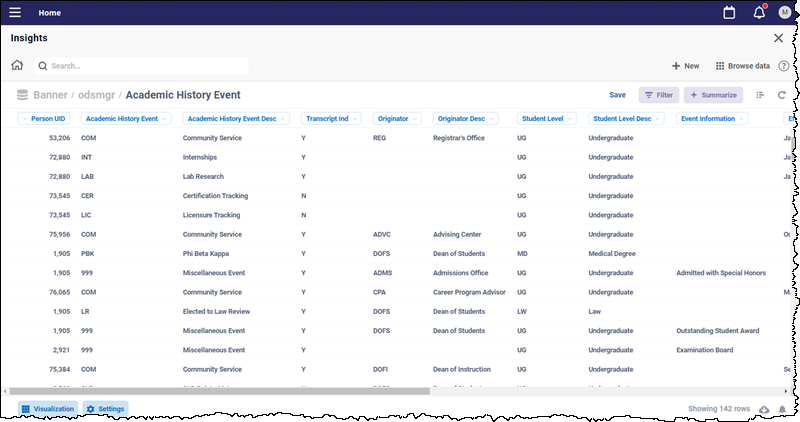
What to do next
Simply save the results to create the starting point for a new report based on this data.
How to archive, unarchive, and delete items
You can archive reports, dashboards, or collections that you no longer need. You can unarchive any archived item and use in the future.
To archive a report or dashboard, you must have Edit permission for the collection containing the report or dashboard. Similarly, to archive a collection, you must have Edit permission for that collection.
- Archiving a report removes it from all dashboards where it appears.
- Archiving a collection will archive all of its contents, including all reports, dashboards, and collections within that collection.
- Collections cannot be unarchived from within Ellucian Insights. See How to unarchive items for more information.
To archive a report or dashboard, select the collection it belongs to. Hover over the report or dashboard to archive. Click More ... and select Archive. To archive multiple items together, select the items by clicking their check box and then click Archive, at the bottom of the screen.
To archive an entire collection, find and click the collection name in the navigation bar. On the collection panel, click More ... and select Archive.
View archived items
To see all reports and dashboards that have been archived, go to the navigation bar, click More ... next to the COLLECTIONS heading, and select View archive.
How to unarchive items
The benefit of archiving items instead of deleting them is that you can recover archived items and reuse them.
If you want to recover an archived item, go to the navigation bar, click More ... next to the COLLECTIONS heading, and select View archive. Hover over the report or dashboard you want to recover and click Unarchive . To unarchive multiple items together, select the items by clicking their check box and then click Unarchive, typically at the bottom of the screen.
If you want to unarchive a collection and its contents, or have it permanently deleted, contact Ellucian Action Line. After a collection is unarchived, Insights administrators must re-apply permissions to the unarchived collection.
How to delete items
Deleting items permanently removes them from Ellucian Insights. You must archive the item before you can permanently delete it.
To delete an item, go to the archive. Hover over the report or dashboard you want to delete and click Delete .
To select multiple items to delete, hover over the icon of each report or dashboard you want to delete, and select the check box for each item. When you have made your selection, click Delete.
Models
To simplify reporting needs, Ellucian Insights models allow you to design and save new logical reporting objects by streamlining data from one or more existing data sources.
- Let you construct a model using query builder or the SQL editor, therefore you can incorporate custom calculated columns in your model
- Let you update column descriptions and customize metadata to create great starting points for exploration
- Show up higher in search results and get highlighted when other users start new queries to promote reuse
- Live in collections to keep them separate from other database schemas
How to use models
- Create an intuitive description of a concept in your department that you organize as a set of columns, for example, a table for student demographics. The model could pull together student information from multiple tables and add computed columns. This model represents the measure and dimensions that you think are relevant to your understanding of your students.
- Create summary tables that aggregate data from multiple tables
- Clean up tables with unnecessary columns and rows filtered out
- Give report viewers information about the subject being modeled
Create a model
To build a new model, you can use either the query builder or the SQL editor within the Insights reporting tool.
Procedure
Create a model from a saved query
Create a model within the Insights reporting tool from a saved query.
Procedure
- Start a new report using either the query builder or the SQL editor, or select an existing saved report that you want to convert to a model.
- Save the report.
- Click More and select Turn this into a model.
Metadata in a model
With models, you can tell Insights what kind of data is in each returned column by adding metadata.
Metadata can also make filtering better by showing the correct filter widget, and it will help the Insights reporting tool pick the right visualization for the results.
Metadata types
| Metadata type | Description |
|---|---|
| Display name | What you want displayed as the column's name. For example, if a descriptive attribute column in your source table is labeled "Program_Desc", you may want this to simply display as "Program". |
| Description | Column description to help other users clearly understand what this data is. This could include source or lineage details, or the calculation used for a derived column. |
| Database column this maps to | For models based on SQL queries, you can tell Insights if the column has the same type as an existing database column. |
| Column type | The default is No special type. Be sure to set the Column type so users can interact with the results. For a list of types available, see Field types. |
| This column should appear in... | Specify whether a column should appear in both the table and detail views, or only in detail views. If the column is only in the detail view, the user must click the entity/primary key for the row to see the column.
|
| Display as |
|
Field types
Field types dictate how the Insights reporting tool displays data, and the column's special functionality, if any.
Insights field types
- Overall Row
- Entity Key – The field in this table that uniquely identifies each row. This could be a person ID, academic period or term code, account ID, etc.
- Entity Name – Different from the entity key, the entity name represents what each row in the table is. For example, in a Users table, the User column might be the entity name.
- Foreign Key – The column in this table that (usually) refers to the primary key of another table to connect data from different tables that are related.
- Common
- Category
- Comment
- Description
- Title
- Location
- City
- Country
- Latitude
- Longitude
- State
- Zip Code
- Financial
- Cost
- Currency
- Discount
- Gross margin
- Income
- Price
- Numeric
- Quantity
- Score
- Share
- Profile
- Birthday
- Company
- Owner
- Subscription
- User
- Date and Time
- Cancelation date
- Cancelation time
- Cancelation timestamp
- Creation date
- Creation time
- Creation timestamp
- Deletion date
- Deletion time
- Deletion timestamp
- Updated date
- Updated time
- Updated timestamp
- Join date
- Join time
- Join timestamp
- UNIX Timestamp (milliseconds)
- UNIX Timestamp (seconds)
- Categorical
- Enum – Abbreviation for enumerated type. The value of an enum draws on a predefined list of options. An example of an enum would be a field for the months of the year. This list of twelve options is defined in makeup of the column, and no options outside this list would be valid.
- Product
- Source
- URLs
- Avatar Image URL
- Image URL
- URL
- Other
- Field containing JSON
- No semantic type – Used for fields that do not fall into any of the above field types.
Create Experience cards for Insights visualizations
By publishing Insights visualizations on Experience cards, your end users can quickly discover and consistently track the most meaningful metrics for your institution.
Before you begin
- The user performing this procedure must have been granted the Card Management administrative permission in Ellucian Experience Setup, as described in Grant Experience dashboard permissions.
- The user performing this procedure must have View permission to the collections containing the visualizations to be added as Insights cards. Refer to the Insights reporting tool permissions section for more information about these permissions and how to set them.
About this task
Only visualizations and reports are available to display in Experience cards. Insights dashboards cannot be displayed in an Experience card.
Refer to Create a card from a template for general information about creating a card in Experience.
Refer to the Build reports and dashboards using the Insights reporting tool section for more information about building visualizations in Insights.
Procedure
-
Click the Main Menu icon and then click
 Configuration to access the Configuration page.
Configuration to access the Configuration page.
-
In the Details section of the page, enter basic card settings:
-
In the Card Information area, enter descriptive information:
Setting Description Card title This title is displayed at the top of the card. Ellucian recommends a title length of 55 characters or less to ensure readability on all devices. Card description This description is not displayed on the card, but is used in search. Card tags Tags are used in search and to filter the cards displayed on the All Cards page and on category pages when accessed from the Experience main menu. You can enter multiple tags, separated by commas. The title, description, and tags help Ellucian Experience users to find cards of interest to them on the All Cards page and on category pages when accessed from the Experience main menu:- The tags are displayed at the top of the page. Users can click a tag to filter the display to only cards with that tag.
- When a user searches for cards, the search includes the text that you enter for title, description, and tags.
Ellucian recommends using the insights tag to help your users find the Insights visualization cards.
Setting Description Mini card icon Select the icon that best represents this card's content, to be used on small viewports where cards are displayed as mini cards that can be expanded to view content. To see all of the icons at a glance, click  Attachment on this page to download the table of Experience icons. The default icon depends on the Card Management tab from which you launched the Add Card process:
Attachment on this page to download the table of Experience icons. The default icon depends on the Card Management tab from which you launched the Add Card process:- All tab:
bulleted listicon - Academics tab:
bookicon - Community tab:
helping handsicon - My Account tab:
usericon - Reporting tab:
analyticsicon - Work tab:
work briefcaseicon
- Optional:
In the External Link area, enter the settings in the table below if you want the card to contain an external link.
- In full-size cards, the external link is accessed from the card action menu

- On small viewports, where clicking a mini card opens an expanded view of the card, the external link is displayed on the card itself.
In the Experience web application (in the browser), links to targets outside of Experience will open in a new tab, while links to Experience pages will open in the same tab. In the Experience mobile app, the link will open in an overlay window.
Setting Description External link label Enter the text for the link as it will appear in the card. External link URL Enter the link target URL. - In full-size cards, the external link is accessed from the card action menu
-
In the Card Information area, enter descriptive information: